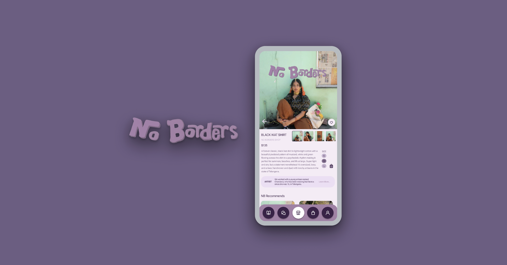

Case study is currently in development!
I'm working on documenting the complete design process, check back soon for the full story!
UX Designer,
UX Researcher
Figma, Procreate
User Research
User Testing
Sketch
Prototype
Affinity Diagrams
2 Months

I'm working on documenting the complete design process, check back soon for the full story!